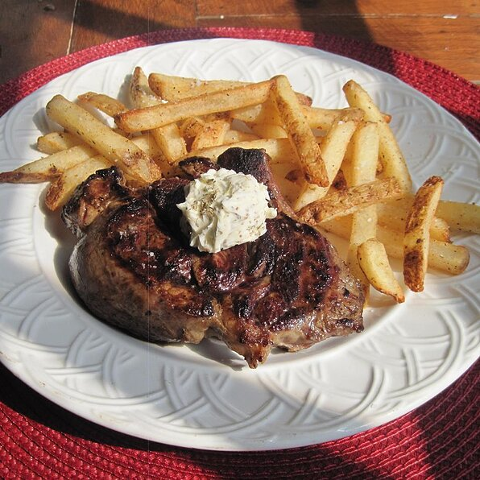

Parisian-Style Steak Frites

Entrecote, also known as Steak-Frites
This dish is popular in France and consists of a thin-sliced hanger steak cooked to order, covered in the most addictive herb butter you have ever had. Pairs well with a nice bottle of Cabernet Sauvigon.
Ingredients
- 1 teaspoon vegetable oil, or as needed
- 2 hanger steaks
- 2 tablespoons minced shallot
- 1/4 cup dry white wine
- 1/4 cup beef broth
- 2 anchovy fillets, chopped, or more to taste
- 3 tablespoons butter
- 1 tablespoon minced fresh parsley
- 1 tablespoon minced fresh chervil
- 1 teaspoon minced fresh thyme
Steps
- Heat vegetable oil in a heavy skillet over medium-high heat. Cook steaks to desired doneness, about 5 minutes per side for medium; an instant-read thermometer inserted into the center should read 130 degrees F (54 degrees C). Transfer steaks to a plate to rest.
- Place shallots in the skillet and cook until beginning to soften, about 2 minutes. Pour wine into the skillet and bring to a boil while scraping the browned bits of food off of the bottom of the pan with a wooden spoon. Add broth and anchovy; cook until thickened to sauce consistency, 2 to 3 minutes. Remove skillet from heat; whisk butter in gradually. Stir parsley, chervil, and thyme into the sauce. Puree sauce in the skillet with an immersion blender until smooth.
- Cut steaks into thin slices across the grain; spoon sauce over slices.